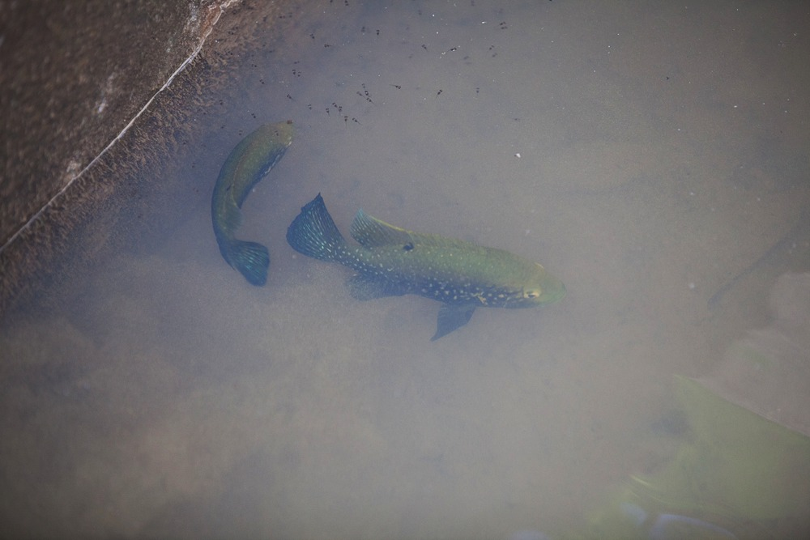

The genus Ptychochromis consists of ten species, all endemic to Madagascar. Many
of the genus are endangered, except perhaps Ptychochromis grandidieri
which
is tolerent of
brackish
waters. One species, Ptychochromis onilahy is presumed to be extinct.

The genus Paretroplus consists of 13 species, all endemic to Madagascar. The
Paretroplus genus is more closely related to the genus Etroplus from India and Sri Lanka than they
are to the other Malagasy cichlid genera.

Paratilapia Information here.
Oxylapia
Katria
Ptychochromoides